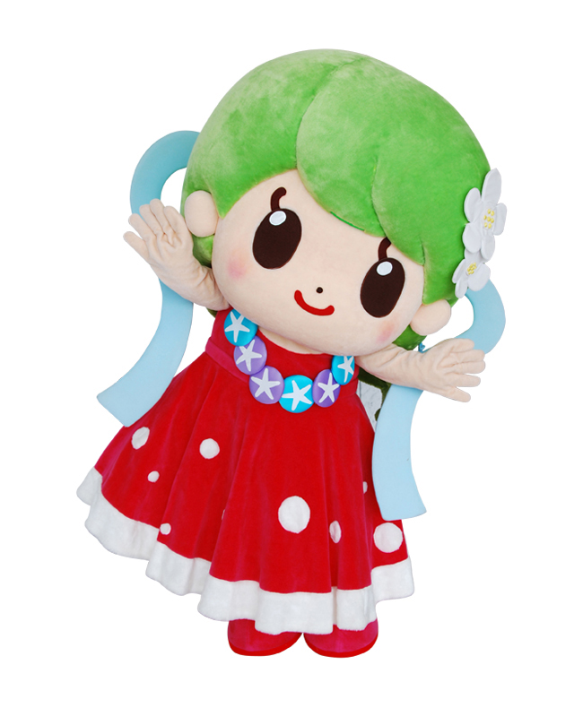
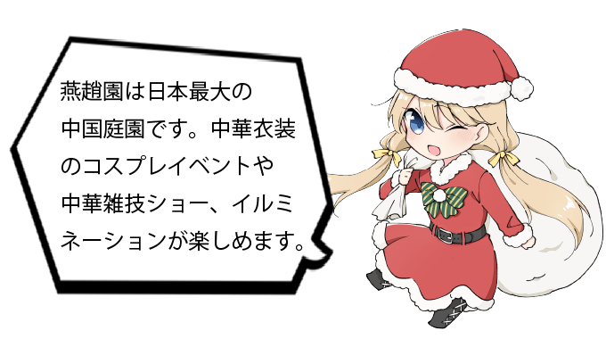
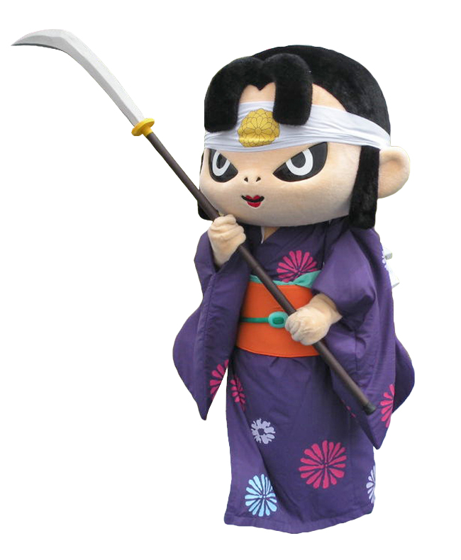
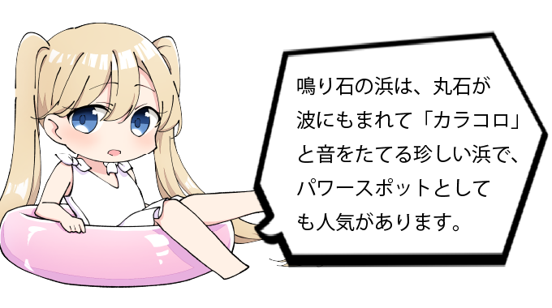
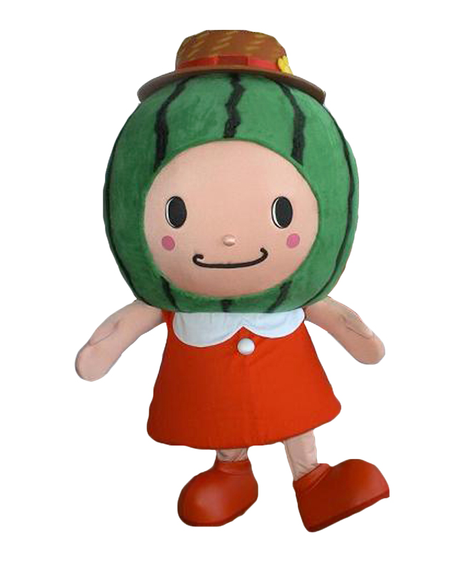
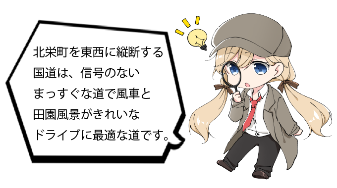

倉吉市イメージキャラクター
くらすけくん
プロフィール
里見八犬伝の八犬士に憧れて倉吉のまちにやってきた不思議な犬。人の温もりや優しさ､そしてどこか故郷のような懐かしさが漂うこのまちが大好きになって､お気に入りの白壁土蔵のキグルミを着て住み着いてしまいました｡
倉吉市公式ウェブサイト背景写真：円形劇場くらよしフィギュアミュージアム
三朝（みささ）町イメージキャラクター
ミササラドン
プロフィール
浦富（うらどめ）名前の由来は、地名のミササに、三朝温泉にふんだんに含まれているという成分「ラドン」をくっつけたもの。笑うとおなかのポケットの中の温泉が沸き 沸かした温泉で、ちびラドン「ビスマス」を育てているとか。
三朝町公式ウェブサイト背景写真：三朝温泉


湯梨浜（ゆりはま）町イメージキャラクター
ゆりりん
プロフィール
湯梨浜町の「はわい」の地名と天女伝説にちなんだハワイアンな天女。二十世紀梨のあざやかな緑色の髪に、梨の花の髪飾り、首に天女伝説に登場した夕顔の花のレイをかけ、日本海の波模様のドレスを着ています。
湯梨浜町公式ウェブサイト背景写真：中国庭園燕趙園（えんしょうえん）


琴浦町イメージキャラクター
琴姫ちゃん
プロフィール
昔、松江藩から今の琴浦町にお嫁にきた菊姫をモチーフに「琴姫ちゃん」が誕生しました。なぎなたの名手で知られたちょっと恐い目をした琴姫ちゃんですが、イベントなどにいくと「かわいい～！！」と言われます！！（本当）
琴浦町公式ウェブサイト背景写真：鳴り石の浜


北栄（ほくえい）町イメージキャラクター
夏味ちゃん
プロフィール
北栄町が誇るブランド西瓜「大栄西瓜」をモチーフにしたキャラクターです。甘え上手でみんなに愛されるキャラクターとして北栄町内はもちろん、町外でも大栄西瓜をPRしています。
北栄町公式ウェブサイト背景写真：青山剛昌ふるさと館